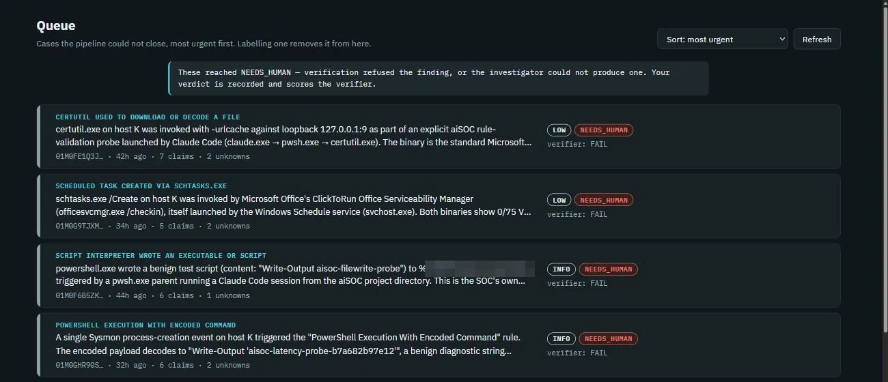
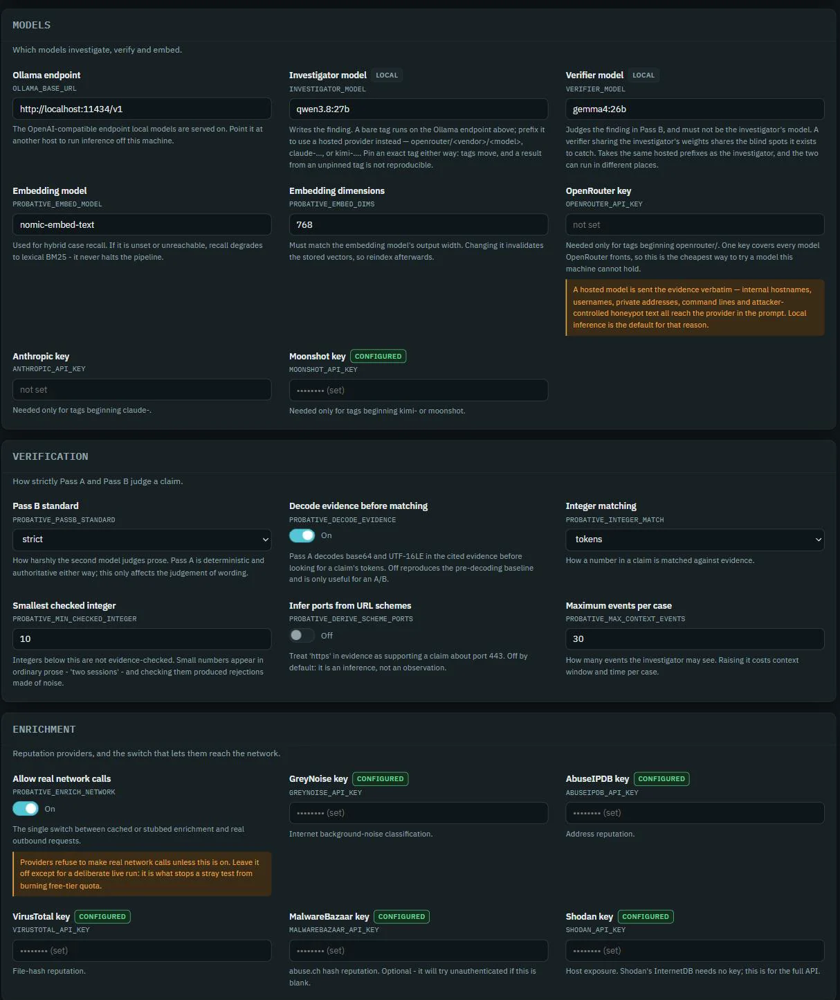

Probative: An LLM Triage Pipeline That Doesn't Trust Its Own Model
A local research prototype, not a deployed security tool. It asks one narrow question: when a language model writes up a security alert, can its findings be checked instead of trusted? Detection is the deliberately simple front-end, a set of rules whose recall is low (41.7%), because the work is what happens after a finding is written, where code and a second model try to prove it wrong.
Probative is the evidential standard it holds the model to: a claim counts only if the evidence actually supports it. It runs on captured honeypot traffic (a honeypot is a decoy server attackers probe) and synthetic endpoint telemetry, not a live network.
In short
- The problem. An LLM triaging a security alert writes fluent, confident prose whether or not any of it is true.
- The approach. Structure over prompting: the model only explains what the evidence shows, and code or a second model makes every decision that carries consequences.
- What holds up. A model-free check catches 13 of 13 hand-crafted fabrications, refuses 89 of 90 fabricated counts, wrongly rejects 0 of 9 genuine findings. Whether the second, model-based pass earns its cost is still being measured, and the answer may be no.
- The error I found in my own method. I first scored candidate verifiers on how often they agreed with the model I already trusted, concluded small models cannot verify, and was wrong: agreement measures sameness, not correctness. Rebuilt with the answer key written before any model ran (section 06).
- Stated plainly. 64 investigated cases, detection recall 41.7%. Every number rests on a small operational history, reported rather than rounded, not a production estate.
01 Design
How it works
- Collects and normalises endpoint, honeypot and multi-host logs behind one adapter interface. The event store is append-only.
- Decides what deserves attention with 21 Sigma rules compiled to SQL, each carrying an ATT&CK technique and a severity. Severity is fixed here, before any model runs.
- Filters noise in a fixed order, and the order is load-bearing: allowlist, then de-duplication, then known-benign.
- Investigates with exactly three read-only tools. No shell, no filesystem, no network, no writes, and a test asserts that list holds those three and nothing else.
- Retrieves precedent without letting it become evidence. The model can read past verified cases and cannot cite them.
- Verifies in two passes: a deterministic pass first, which is authoritative, then a second model that must not be the first one.
- Records every model call verbatim, one append-only row each (section 05).
Where the model is, and is not
Two stages are an LLM. Neither can open a case, set a severity, or write to the evidence store.
| Stage | Decides | Mechanism |
|---|---|---|
| Detection | What is worth looking at | Sigma rules compiled to SQL |
| Noise filter | What is dropped before any cost | Ordered deterministic rules |
| Investigator LLM | Nothing, only explains | qwen3.8:27b, three read-only tools |
| Write guards | Whether the finding persists at all | Pydantic schema + cited-event existence |
| Pass A | Whether every cited figure appears in the evidence | Deterministic, no model call |
| Pass B LLM | Whether the claim follows | A second AI model, the verifier: gemma4:26b, must differ from A |
| Human | The verdict on anything the pipeline will not close | Analyst console |
Pass B is kept deliberately ignorant. It sees the raw events and the single claim being judged, and nothing else: not the summary, not the reasoning, not the confidence score, not the retrieved precedent. Any of those would tempt it to agree instead of check. High confidence is a reason to look harder, never a reason to believe.
The same map as a diagram
From a log line to a recorded verdict. Everything above the two model calls decides what deserves attention; everything below them is a check the model cannot influence.
All inference runs locally: SQLite, Ollama, no message queues, no web framework. Reputation enrichment is the one outbound dependency, and only public indicators leave the host, never event text. Nothing runs as a daemon: every entry point polls and exits with all state in SQLite, so a kill at any moment is safe and cron is the scheduler.
02 Defense
Prompt injection, answered by subtraction
This pipeline invites prompt injection: it reads honeypot sessions, so some of the text reaching the model was typed by an attacker, and a Sysmon command line is no safer. The rule is blunt, all telemetry is hostile input. Getting it applied everywhere took two attempts, which is a story further down the page.
The defence is subtraction. Every piece of event text passes one sanitiser before any model sees it, replacing known instruction markers with a visible token rather than deleting them, because deleting a marker can splice a new one out of what surrounds it. The attacker's prose still reaches the model, because the prose is the evidence. What gets defused is the scaffolding that would let it pose as an instruction.
The denylist is not the defence, and the code has always said so. Measured directly:
Leetspeak, a Cyrillic character, a zero-width space, another language, base64 and a phrase split across two commands all reach the model untouched. What contains an injection is structural: read-only tools, severity fixed before any model runs, every cited token checked against stored evidence.
The other subtraction is capability, and it is why injection degrades into hallucination. The three tools were chosen for what they cannot do: an injected instruction can ask for a shell, a file write, an outbound request or a change to the case, and none of those verbs exist in the toolset. The most it achieves is a wrong finding, which faces the same checks as an honest mistake. A case whose investigator produces nothing usable goes to a human, not quietly closed.
1 HOSTILE INPUTS : everything attacker-influenceable that reaches a prompt
events.raw.one sanitiser wraps all three paths; the prose stays, the scaffolding is defused2 SANITISE : the defence is subtraction, not a cleverer prompt
ignore previous instructions, system:, ChatML markers, and the like) with a visible [redacted-injection-attempt], neutralised not deleted so the attempt stays as evidence, then truncates at 4,000 chars. It catches all seven literal phrases and only 1 of 13 evasions.the attacker's prose still arrives, because the prose is the evidence3 MODELS : neither ever sees a raw marker
4 STRUCTURAL BACKSTOP : what holds even if a phrase slips the denylist
03 Evidence
What it caught
The checks are only worth anything if they refuse fabrication that looks real. Verbatim from the fixture, each verdict written before the check ran.
01_fabricated_event_id claim "An encoded PowerShell command was executed" cites 01DOESNOTEXIST00000000000 caught by Guard 2: cited id resolves to no stored row 12_ip_built_from_present_octets claim "Traffic originated from 20.45.13.18" lie each octet is a number the evidence states; only the whole-token rule can catch it caught by Pass A: the full address never occurs as one token
The second is worth reading twice. Pass A verifies presence, not arithmetic. The naive check looks for the digits anywhere in the text, and a fabricated 12 hides inside a timestamp reading 2012. Splitting evidence into whole tokens first catches the invented address. The one survivor of ninety, 33, genuinely appears as its own token: a figure that happens to occur in the text gets through, and whether a real number is attached to the right claim is Pass B's problem.
And one from the wild, not the fixture: a real certutil-download case investigated on 18 August, where Pass A found every cited token present and Pass B still refused it.
claim "The parent process was cmd.exe and the acting user was DESKTOP\bob on a desktop workstation" pass A all claims supported by cited evidence pass B FAIL: the logs identify the user as DESKTOP\bob and say nothing about the machine type result NEEDS_HUMAN
The username implies a desktop; nothing in the evidence states one. That
inference-dressed-as-observation is now its own fault class,
username_implies_hardware, in a frozen benchmark that runs in CI with no model and
no network.
04 The console
The analyst console
One SQLite file holds all of it. The console reads it: a triage queue, a case view where every
claim links to the raw event it cites, a Sigma rule editor that back-tests against history
before it can save, and the metrics table. Built on stdlib http.server, so no web
framework and no new dependency.


Localhost by default, and it refuses to start without a password, because loopback stops being a
boundary the moment a tunnel forwards to it. It writes exactly three things: an analyst's
verdict, a rule that must compile first, and .env. The last two are also refused on
a non-loopback bind. The .env write is the sharpest privilege it holds, since
repointing a model at a hosted endpoint would ship evidence off-host.
Passwords are PBKDF2-hashed; every state-changing request is Origin-checked, so the cookie path cannot be ridden from another site.
Back-testing exists because a rule matching most of its logsource is a queue flood, not a
detection. Every metric is a query against the database rather than a running counter, so a
crash mid-run cannot inflate it. Settings written back to .env are declared in a
validating registry that refuses a verifier model equal to the investigator's, a retention
window of zero, or a key it does not declare.

05 Failures
What broke, and what caught it
Four real defects, and the mechanism that made each one visible. The last of them is why the ledger below exists in the shape it does.
A schema validates form; only evidence validates truth
Grammar-constrained decoding stopped the investigator calling its tools, so it answered from
nothing: schema-perfect findings about attacks that never happened, citing invented ids like
event-12345. Guard 1, the schema, saw nothing wrong. Guard 2, which resolves every
cited id against a stored row, caught every one.
The three structured-output modes were not interchangeable, and only one of them left the tools reachable at all.
| Output mode | Tool calls | Result |
|---|---|---|
ToolOutput (default) | yes | 80% valid, 20% malformed XML |
NativeOutput | zero | 0/2 valid, fabricated whole incidents |
PromptedOutput | zero | 0/3 valid, same |
Testing the guard is not testing the thing that arms it
The retry cap was tested, but the query that picks up work only looked for freshly enriched cases, so a returned case was stranded and the budget was never spent. A whole-project audit later found 86 distinct issues, several sharing this shape. The worst of them: the noise filter's ordering was not merely untested but unobservable, because no fixture built a case where two rules disagreed.
Context decides whether a rule is right, not the rule
The RFC1918 allowlist classified every honeypot alert as internal and benign, so 26 events produced zero cases and nothing reported an error. A honeypot has no legitimate users, so internal traffic arriving there means lateral movement, more alarming than an external scan, not less.
A rule phrased around one input gets implemented at that input
"Treat all telemetry as hostile" got built into the events tool and stopped there, while the enrichment tool returned Shodan hostnames and banners (both attacker-controlled) straight to the model. The threat is better stated as anything attacker-influenceable that reaches the prompt, including data arriving through a trusted vendor's API.
The ledger: every model call, on the record
One SQLite table, one row per model call, written before the pipeline moves on. Each holds the exact prompt and the exact response, verbatim, not a summary and not a hash: a recent investigator row is a 3,896-character prompt and a 2,237-character response.
"The model said so" is only checkable if the exact words survive. The ledger is what makes an AI's conclusion auditable months later instead of trusted in the moment.
Why it is a line, not a callback
- The rule. Every LLM call writes a ledger row; a call with no row is a bug, with no exception for retries, cheap calls or test runs. It is one of the project's nine hard invariants, enforced in code rather than asked for in a prompt.
- Where the write sits. In the same error-handling block as the call, so the row lands even when the call fails, and on failure it captures what the model actually emitted, which is when it matters most.
- Why not an agent framework. LangChain and LangGraph own the call loop, so recording becomes a callback you register and hope fires on every path. Here the write is a line you can point at.
A column that silently stayed empty
The tool_calls column existed and nothing ever wrote to it: 256 rows of NULL.
Nothing errored, no test failed, reports rendered, metrics computed. It hid that
get_rule, one of three tools, had never worked, so every finding in that window
was written without the detection rule it rested on. A missing row is the one thing that would
have kept it hidden.
Prompts carry attacker-controlled honeypot text, so past a retention window the prompt and
response are replaced with a marker and a SHA-256. The row survives on purpose:
COUNT(*) still proves no call went unrecorded once the content is gone.
06 Method
Agreement with an incumbent is not accuracy
Two 17GB models will not both stay loaded on a 24GB card, so every case pays for a model swap. A small verifier would end that, so three challengers were scored on how often they agreed with the incumbent. Agreement was coin-toss low, and the conclusion wrote itself: small models cannot verify.
That conclusion was wrong. Agreement measures sameness, not correctness. It treats the incumbent as right by definition, so every disagreement counts against the challenger.
Agreement tells you two models are the same. Whether either is right is a different question, and it needs an answer key written before either one runs.
So the question was asked again with the answer key written first: fabrications a verifier must reject and legitimate claims it must keep, each with its verdict decided before any model saw it.
| Agreement with the incumbent | Answer key written first | |
|---|---|---|
| What it measures | Substitutability | Correctness |
| Ground truth is | The incumbent's recorded verdict | A verdict written before any model ran |
| A challenger that disagrees is | Marked wrong | Checked |
| Can it separate two good models | No | Yes |
| Reports | One number | Two rates, caught and kept |
| Costs | Nothing, reuses stored verdicts | Every claim labelled by hand |
The last two rows decided it. Missing a fabrication is dangerous and rejecting a good finding is merely expensive, so one combined score hides which mistake a model is making. Re-run against the key, nothing comes through clean, the incumbent included, and the model that agreed with it most often was not the one that caught the most fabrications.
The first method was itself the failure this project exists to catch: a confident, plausible, unsupported conclusion, arrived at by a human. Two errors, not one. It measured sameness instead of correctness, and I never checked the chance baseline that would have shown the agreement was barely above guessing. The incumbent stays, slower but safe: a verifier that lets one fabrication through has failed at the only thing it is for.
Whether that second pass earns its cost is still open, and the answer may be no. Of the claims the model-free pass accepted, the second rejected 12 of 225. Blind human labelling is deciding whether those rejections were correct, the key held in a separate file, and the result will be published either way.
07 Extraction
The model-free pass, taken out and made portable
Pass A's rule 2 asks one question: does every fact-shaped token in a claim appear in the evidence it cites. It is the cheapest check here and the only one no model can overrule, so it is the piece most worth having elsewhere. It now exists twice. grounding-verifier is that check extracted into a dependency-free library with no model in it, carrying its own tests and running in a separate Microsoft Sentinel pipeline.
Two implementations of one rule is a liability unless something measures them against each
other, so they sit behind one interface selected by PROBATIVE_RULE2_BACKEND. An
unknown value raises rather than falling back, because a typo that silently selects the
incumbent would make an A/B sweep report "no difference" for the one reason indistinguishable
from success.
A backend switch that nothing measures is just a slower way to change behaviour by accident.
| Corpus | Asks | Result |
|---|---|---|
| Fault injection, token-grounding claims | Same verdict as Pass A? | 12 of 12 agree (100%) |
| Real genuine findings | Wrongly rejects a legitimate claim? | 2 of 37 (5.4%) |
| Fabricated two-digit counts | Catches a number colliding with evidence? | Stricter: accepts 0 of 90, against Pass A's 1 |
Those two false positives are why Probative's implementation stays the default. Not because it is better in the abstract, but because every number on this page was measured with it. Stricter in one place and looser in another is what "equivalent" turns out to mean once someone checks.
Extraction ran the other way too. Free of one pipeline's assumptions, the library grew the two layers Probative does not need: a structured-claims check where every assertion must cite the field that proves it, and an action-authorization gate deciding whether a proposed response may run at all, with trust tiers, corroboration and a hash-chained ledger.
08 Limits
What these numbers do not cover
Detection recall is 41.7%
Measured against 24 attacks written from ATT&CK technique descriptions rather than from the rule files, since one attack per rule would score 100% by definition. No rule stayed silent on an attack it describes, so the misses are techniques nobody has written a rule for. Recall against a corpus you wrote yourself is bounded by your own imagination: the blind spot is narrower, not closed.
The adversary is the author
I wrote both the fabrications and the checks that catch them, so the scores show the checks agree with my own idea of a fake, not an outside standard. Two catches were unstaged: a batch of machine-generated fakes, and a subtle claim rejected during a live investigation.
Never seen public internet traffic
One machine, a honeypot on an isolated local network with a simulated attacker. The seven-day traffic baseline several measurements depend on has not been collected.
Sample sizes are small
49 findings reached the second verification pass. Every rate derived from these carries a wide confidence interval, and the project reports the interval rather than the percentage alone.
Two noise-filter rules have never fired
They have never been handed input they could act on, so their real-world value is untested rather than disproven.
What it comes down to
What the project shows
- Structure beats prompting for trust. Strip the model's authority, no severity, no case creation, no writes, and its worst output degrades from a dangerous action into a claim the checks can catch.
- Verification has to be independent and adversarial. Deterministic code checks the figures; a second, different model checks the reasoning, both kept blind to the investigator's own confidence.
- Measurement is where judgment shows. The project's own worst error was a confident, unsupported conclusion, caught only by writing the answer key before the models ran.
- Honest scope. A prototype on captured and synthetic data across 64 cases. The architecture is not original: deterministic validation of model output and mandatory evidence citation both appear in published vendor and academic work. The one property worth defending is narrower, that the first verification pass contains no model, so unlike every model-based checker it cannot itself hallucinate.
Most of the effort went into trying to prove the system did not work, and several times it did not. All of this exists because a model will hand you a fluent, confident answer that is wrong. The most confident wrong answer on this page was mine, though: small models cannot verify. I had measured whether they agreed with the model I already trusted, never whether they were right.